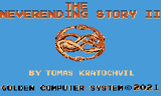

← VŠECHNY HRYATARI800 · WEBOVÁ HERNA
2021 · GRAFICKÁ ADVENTURA
The NeverEnding Story II
Nekonečný příběh pokračuje.
FANTASIAATARI XL/XE · HTML5

Příběh pokračuje.
Dva jazyky. Jedna rozehraná hra.
2021 · GRAFICKÁ ADVENTURA
Nekonečný příběh pokračuje.

Dva jazyky. Jedna rozehraná hra.